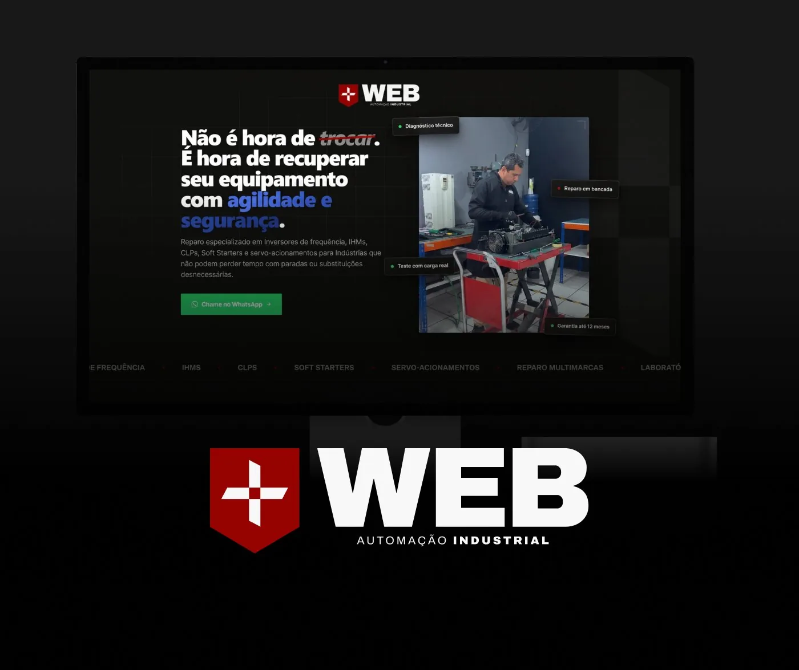

Sites institucionais
Uma casa digital para sua marca: quem você é, o que oferece e por que alguém deveria escolher você — em uma experiência organizada e responsiva.
Transformo essa ideia em uma presença digital clara, bonita e pronta para apresentar o valor do seu negócio.
Estratégia, design e implementação em um só projeto.

Uma presença digital que trabalha junto com você
Quando a mensagem é clara e a experiência é bem pensada, fica mais fácil para as pessoas entenderem o que você oferece — e saberem qual é o próximo passo.
Conheça as soluçõesO que faço
Projetos digitais pensados para comunicar melhor, transmitir confiança e orientar cada visita.
Uma casa digital para sua marca: quem você é, o que oferece e por que alguém deveria escolher você — em uma experiência organizada e responsiva.
Páginas focadas em uma oferta ou campanha, com conteúdo em uma sequência lógica e chamadas para ação fáceis de encontrar.
Uma nova estrutura e linguagem visual para um site que já não acompanha a fase, o posicionamento ou as necessidades atuais do seu negócio.
Estratégia, organização das informações, interface e desenvolvimento tratados como partes do mesmo projeto — com integrações avaliadas conforme a necessidade.
Feito para acompanhar seus próximos passos
Uma solução sob medida para o momento e os objetivos da sua marca.
Apresente seus serviços, diferenciais e formas de contato em um só lugar.
Tenha uma página dedicada a uma oferta, ação ou captação de interessados.
Atualize a experiência digital para refletir melhor a qualidade do que você entrega.
Trabalhos selecionados
Um recorte de projetos de sites, landing pages e presença de marca.
Um bom projeto começa entendendo o que você precisa comunicar — e termina com um site que faz sentido para o seu negócio.
ESTRATÉGIA · DESIGN · IMPLEMENTAÇÃO

WEB AUTOMAÇÃO INDUSTRIAL / LANDING PAGEComo trabalhamos
Cada projeto tem suas particularidades. As etapas são alinhadas com você para que decisões, conteúdo e prioridades caminhem juntos.
Conversamos sobre seu negócio, público e objetivo para definir o escopo.
Organizamos a mensagem e desenhamos uma experiência alinhada à sua marca.
Transformo o projeto em uma página responsiva, pronta para ser revisada.
Com tudo aprovado, seu site é preparado para entrar no ar.
Quem vai cuidar do seu projeto
Sou Product Designer com base em Design Gráfico e experiência criando marcas, interfaces e experiências digitais. Desde 2020, trabalho entre estratégia, design e desenvolvimento.
Gosto de acompanhar o projeto de ponta a ponta: entender o desafio, organizar a mensagem, cuidar dos detalhes visuais e transformar o plano em uma experiência digital real.
Atualmente curso um MBA em Inteligência Artificial e exploro novas ferramentas para tornar o processo criativo e de implementação mais eficiente — sem abrir mão de decisões pensadas para cada negócio.
Mais sobre minha trajetóriaPerguntas frequentes
Se ainda ficou alguma dúvida, me chama e conversamos sobre o seu projeto.
O escopo é definido conforme sua necessidade. Podemos trabalhar a estrutura, a direção visual, o design das páginas, a implementação e os pontos de contato previstos para o projeto.
Sim. A experiência é planejada para diferentes tamanhos de tela, com conteúdo e navegação adaptados para desktop e dispositivos móveis.
Sim. A página pode ser estruturada em torno de uma oferta ou objetivo, como apresentar um serviço e facilitar o contato de pessoas interessadas.
Posso ajudar a organizar as informações e estruturar a mensagem do site. O nível de produção de conteúdo é combinado no escopo de cada projeto.
Integrações podem ser avaliadas conforme as ferramentas usadas pelo seu negócio, a disponibilidade de acesso técnico e as necessidades do projeto.
Investimento e prazo dependem do escopo, do número de páginas e das funcionalidades. Depois de entender o que você precisa, consigo propor os próximos passos com mais clareza.
Me conte o que você está planejando. A gente conversa sobre as possibilidades e encontra o melhor caminho para tirar a ideia do papel.
Ou escreva para costamatheustech@gmail.com